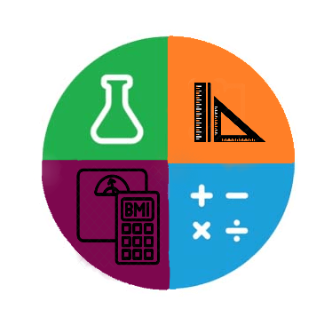

<ion-app>
  <ion-menu menuId="main-menu" contentId="main">
    <ion-content>
      <div class="menu-header-bg"></div>
      <div class="header-content">
        
        <div class="header-font">
          <h3> Measurements Enhancement Translator Tricks </h3>
            
        </div>
      </div>

      <ion-list class="menu-items"lines="none">

        <ion-menu-toggle>
          <ion-item routerLink="/home" class="active">
            <ion-icon name="home"></ion-icon>Home
          </ion-item>
        </ion-menu-toggle>

        <ion-menu-toggle>
          <ion-item href="/length()">
            <ion-icon name="logo-amplify"></ion-icon>Length
          </ion-item>
        </ion-menu-toggle>

      <ion-menu-toggle>
        <ion-item  href="/temperature">
          <ion-icon name="thermometer"></ion-icon>Temparature
        </ion-item>
      </ion-menu-toggle>

      <ion-menu-toggle>
        <ion-item href="/time">
          <ion-icon name="stopwatch"></ion-icon>Time
        </ion-item>
      </ion-menu-toggle>

      <ion-menu-toggle>
        <ion-item href="/volume">
          <ion-icon name="flask"></ion-icon>Volume
        </ion-item>
      </ion-menu-toggle>

      <ion-menu-toggle>
        <ion-item href="/memory">
          <ion-icon name="desktop"></ion-icon>Memory Conversion
        </ion-item>
      </ion-menu-toggle>
      
      <ion-menu-toggle>
        <ion-item  href="/weight">
          <ion-icon name="podium"></ion-icon>Weight
        </ion-item>
      </ion-menu-toggle>

      <ion-menu-toggle>
        <ion-item  href="/bmi" >
          <ion-icon name="medkit-sharp"></ion-icon>BMI
        </ion-item>
      </ion-menu-toggle>

    </ion-list>

    </ion-content>
    <div class="footer">
      <div class="footer-font">
      <h6>For education purposes only! </h6>
    </div>
  </div>
      
    
  </ion-menu>
  <ion-router-outlet id="main"></ion-router-outlet>


  <script type="module" src="https://cdn.jsdelivr.net/npm/ionicons/dist/ionicons/ionicons.esm.js"></script>
  <script nomodule src="https://cdn.jsdelivr.net/npm/ionicons/dist/ionicons/ionicons.js"></script>

</ion-app>
